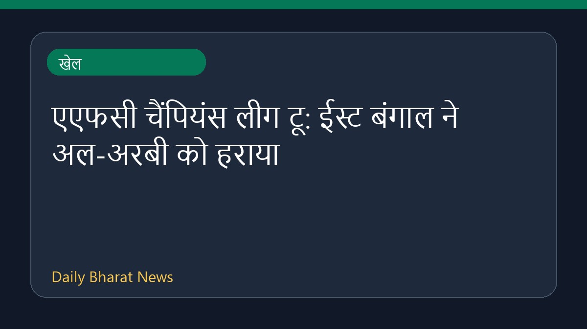

एएफसी चैंपियंस लीग टू: ईस्ट बंगाल ने अल-अरबी को हराया

एएफसी चैंपियंस लीग टू के शुरुआती नॉकआउट मुकाबले में ईस्ट बंगाल ने अल-अरबी को चार-एक से पराजित कर दिया। रेड एंड गोल्ड ब्रिगेड ने शानदार वापसी करते हुए मैच में जीत दर्ज की और टूर्नामेंट के ग्रुप चरण के लिए क्वालीफाई कर लिया है। शुरुआती बाधा को पार करते हुए टीम ने मुकाबले में बेहतरीन प्रदर्शन किया और अंततः शानदार अंतर से सफलता हासिल कर अगले दौर में अपनी जगह पक्की कर ली।